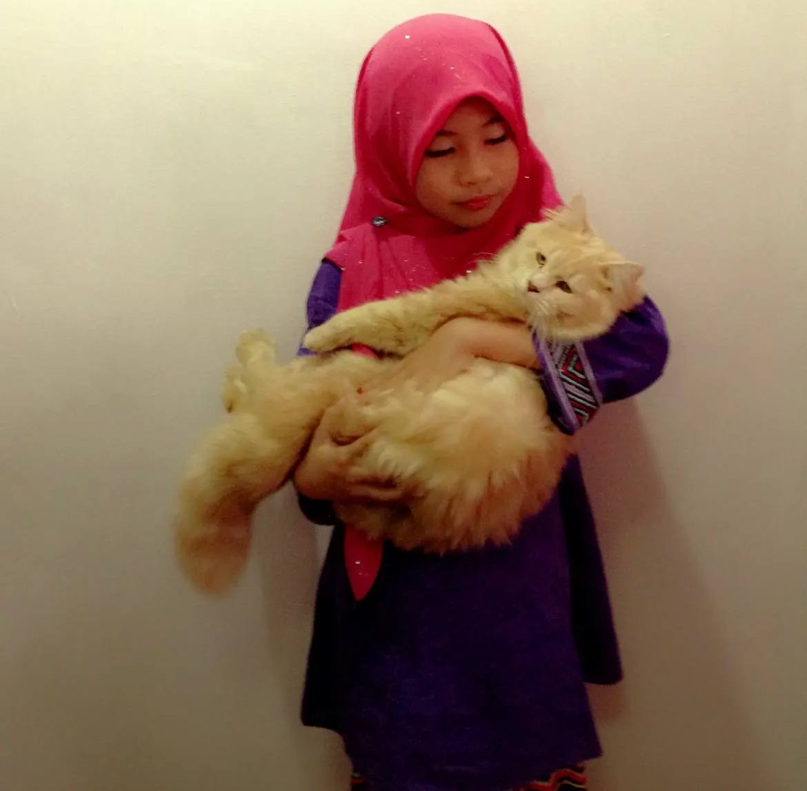
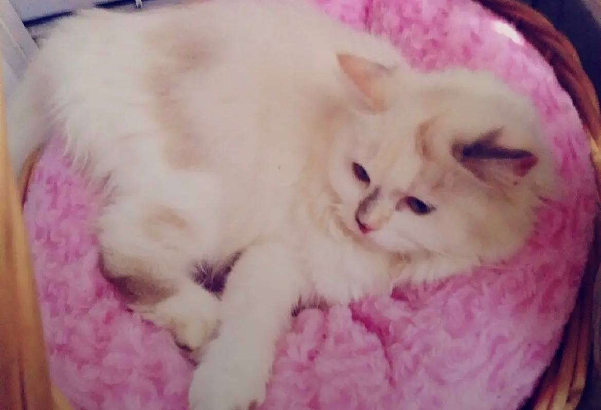

|
 JOJOJojo was my first cat and will always be very special to me. He was playful, energetic, and loved running around the house, chasing toys, and following me like my little shadow. When Lily joined our family, Jojo became like a big brother to her, and they were very close. After Lily passed away, Jojo grew quiet and lonely, and not long after, he went missing and later passed away. Losing Jojo was heartbreaking, as he was my first pet. |

Lily was the cat I loved the most gentle, calm, and always close to me. Being with her made me feel peaceful and happy, and at night she slept beside me, making me feel safe. When Lily passed away, it broke my heart, especially because we couldn’t say goodbye. Losing her felt like losing a best friend, and even now, every time I see a white cat, I’m reminded of her and the beautiful memories we shared. |
© 2026 Ariyana Aulia | IMD318